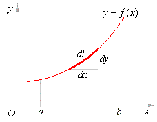

Vektorfunktioner
Matematik A
Vibenshus Gymnasium
Først lidt repetition om vektorer
Svar-bazar
Reglerne er som følger:
- Alle elever har hver sit svarark.
- Gå rundt mellem hinanden, og find en ny partner, som I normalt ikke sidder ved siden af eller arbejder tæt sammen med.
- Elev 1 stiller elev 2 et spørgsmål fra arket. Elev 2 svarer, hvis vedkommende kan, mens elev 1 skriver svaret ned på sit papir.
- Elev 2 tjekker det nedskrevne og skriver sine initialer, hvis det kan godkendes.
- Rollerne byttes.
- Der findes nye partnere, hvor man gør det samme.
- Når man har svar på alle sine spørgsmål, sætter man sig på sin plads.
- Når alle er færdige sammenlignes svarene i grupper. Ved uenighed spørges læreren.
Svar-bazar

Eksperimenter
Giv mig jeres mest sindsyge funktionsforskrifter, så ser vi, hvad det bliver til i geogebra.
Det skrå kast (fra fysik)
Hvordan ser formlerne ud?
Alle hjælpemidler er tilladte.
Lad os se, hvordan det ser ud i geogebra.
Den rette linje

Parameterfremstilling:
Hvad man skal kende:
- Et kendt punkt på kurven.
- En retningsvektor.
Alternativt skal man kende:
- To kendte punkter på kurven.
Herfra kan retningsvektoren bestemmes.
Grafiske eksempler
Giv mig nogle eksempler på kendte punkter og retningsvektorer.
Lad os se, hvordan banekurverne ser ud i geogebra, og hvordan parameterfremstillingerne opstilles.
Lidt opgaver

- Løs opgave 1 og 2 i det følgende dokument. Par-tjek.
Skæring med akserne

- Skæring med x-aksen
- Sæt \(y(t)=0\).
- Isoler \(t\) i ligningen.
- Indsæt \(t\) i \(x(t)\).
- Skæring med y-aksen
- Sæt \(x(t)=0\).
- Isoler \(t\) i ligningen.
- Indsæt \(t\) i \(y(t)\).
Hvordan kan det nu være?
Tilbage til opgaverne fra før
Bestem t-værdierne samt koordinaterne til skæringspunkterne for hhv x- og y-aksen for de to vektorfunktioner i opgave 1 og 2 fra tidligere.
Punkt på banekurve?
Hvis en vektorfunktion har den generelle forskrift
\[\vec{r} (t) = \begin{pmatrix} x(t) \\ y(t)\end{pmatrix}\]
og et punkt \(P\) har koordinaterne
\[P=(P_x, P_y)\]
kan man undersøge om \(P\) ligger på banekurven for \(\vec{r}(t)\) vha følgende procedure.
- Sæt \(P_x = x(t)\) (eller \(P_y = x(t)\))
- Isoler \(t\) i ligningen.
- Indsæt den fundne værdi for \(t\) i \(y(t)\) (\(x(t)\)).
- Hvis y-værdien (x-værdien) stemmer overens med punktets værdi, så ligger punktet på banekurven.
Fra vektorfunktion til alm funktion

Hvilke er almindelige funktioner?
Ingen loops etc
For at kunne skrive en vektorfunktion om til en almindelig funktion, må der ikke være loops eller lignende. Hvis dette er opfyldt, kan man gøre følgende:
- Isoler \(t\) i funktionen \(x(t)\).
- Indsæt udtrykket for \(t\) i \(y(t)\), som så bliver til \(y(x)\), hvilket igen er svaret.
Eksempler
Vi tager det lige på tavlen.
Eksempler

Fra alm funktion til vektorfunktion

Dette er ganske nemt
Hvis man har en almindelig funktion \(f(x)\), så bliver den simpleste vektorfunktion, som ligner den bare
\[\vec{r} (t) = \begin{pmatrix} t \\ f(t) \end{pmatrix}\,.\]
Man skal altså bare indsætte \(t\) i stedet for \(x(t)\) og \(f(t)\) i stedet for \(y(t)\) i parameterfremstillingen.
Eksempler:
En lille quickie
- Hvert makkerpar: Opskriv en almindelig funktion.
- Byt funktion med det andet makkerpar.
- Omskriv jeres nye funktion til en vektorfunktion:
- Alle: sammenlign resultater og tjek, at det er korrekt.
Opgave 3 i pdf-filen om rette linjer og cirkler
En ret linje er givet ved vektorfunktionen: \[\vec{r} (t) = \begin{pmatrix} t - 1 \\ 3 + 2 \cdot t \end{pmatrix}\]
- Beregn linjens skæring med y-aksen.
- Beregn linjens skæring med x-aksen.
- Undersøg om punktet \(P = (−3, 7)\) er beliggende på \(\vec{r}(t)\).
- Omskriv vektorfunktionen til en almindelig funktion af typen \(f(x) = a \cdot x + b\).
Cirklen som vektorfunktion
Forstyr ikke mine cirkler!
Det vigtige
\[\overrightarrow{OP} (t) = \begin{pmatrix} x(t) \\ y(t) \end{pmatrix} = \begin{pmatrix} x_0 \\ y_0 \end{pmatrix} + \begin{pmatrix} r \cdot \cos \left( \omega \cdot t + \phi \right) \\ r \cdot \sin \left( \omega \cdot t + \phi \right) \end{pmatrix}\]
hvor
- \((x_0, y_0)\) er centrumskoordinaterne
- \(r\) er radius
- \(\omega\) er vinkelhastigheden
- \(\phi\) er faseforskydningen.
Vi tager det lige på tavlen, hvordan det er fremkommet.
Interaktiv cirkel
Cirkeltræning
Løs opgave 4 og 5 på side 4 pdf-filen om rette linjer og cirkler.
Opgave 4
Et objekt bevæger sig rundt på periferien af en cirkel givet ved ligningen:
\[(x − 4)^{2} + (y + 2)^{2} = 25\,.\]
med en vinkelhastighed på 3 \(s^{-1}\) og en faseforskydning på \(- \frac{\pi}{2}\).
- Omskriv ligningen til en vektorfunktion.
- Afbild vektorfunktionen i et koordinatsystem.
Opgave 5
En cirkelbue er beskrevet ved vektorfunktionen:
\[\vec{r} (t) = \begin{pmatrix} 1- \cos (t) \\ 3 + \sin (t) \end{pmatrix} \,,\, \text{ hvor } 1 \leq t \leq 2\,.\]
- Beregn buens radius.
- Beregn koordinaterne til buens centrum.
- Beregn koordinaterne til buens endepunkter.
- Beregn koordinaterne til det punkt, hvor \(t=1.8\).
Et punkt på buen har koodinaterne \((x,y) = (0.733, y)\).
- Beregn punktets tilhørende \(t\)-værdi.
- Afbild alle oplysninger om cirkelbuen og punktet i et koordinatsystem.
Hastighed, fart og acceleration
Fra fysik kender I allerede
Hastighed
\[v = \frac{\Delta x}{\Delta t}\]
Acceleration
\[a = \frac{\Delta v}{\Delta t}\]
Som bliver til
For vektorfunktionen (stedvektoren)
\[\vec{r} (t) = \begin{pmatrix} x(t) \\ y(t) \end{pmatrix}\]
findes hastighed som
\[\vec{v}(t) = \begin{pmatrix} \frac{d x(t)}{dt} \\ \frac{d y(t)}{dt} \end{pmatrix} = \begin{pmatrix} x'(t) \\ y'(t) \end{pmatrix}\]
mens farten er længden af hastighedsvektoren
\[\left| \vec{v} (t) \right| = \sqrt{\left( x'(t) \right)^2+\left( y'(t) \right)^2}\]
Accelerationen er da
\[\vec{a}(t) = \frac{d \vec{v}(t)}{dt} = \frac{d^2 \vec{r}(t)}{dt^2} = \begin{pmatrix} x''(t) \\ y''(t) \end{pmatrix}\]
med størrelsen af accelerationen er
\[\left| \vec{a} (t) \right| = \sqrt{\left( x''(t) \right)^2+\left( y''(t) \right)^2}\]
Differentiation af det skrå kast
Det skrå kast kan beskrives med vektorfunktionen
\[\vec{r}(t) = \begin{pmatrix} v_{0} \cdot \cos (\theta) \cdot t + x_0 \\ - \frac{1}{2} \cdot g \cdot t^2 + v_0 \cdot \sin (\theta) \cdot t + y_0 \end{pmatrix}\]
Hastigheden bliver
\[\vec{v}(t) = \begin{pmatrix} v_0 \cdot \cos (\theta) \\ -g \cdot t + v_0 \cdot \sin (\theta) \end{pmatrix}\]
mens accelerationen er
\[\vec{a}(t) = \begin{pmatrix} 0 \\ - g \end{pmatrix}\]
Den tager vi vist også lige på tavlen.
Differentiation af en cirkelbevægelse
Nu er det jeres tur. Find opgaven på side 5 pdf-filen om rette linjer og cirkler.

Geogebra galore
Tangenter
Lodrette og vandrette
Lodrette tangenter
Optræder, hvor hastighedsvektorer peger lige op eller lige ned, altså hvor
\[x'(t) = 0\]
Vandrette tangenter
Optræder, hvor hastighedsvektorer peger lige henad, altså hvor
\[y'(t) = 0\]
Fælles for begge
- Isoler \(t\) i en af de viste ligninger.
- Indsæt den fundne værdi for \(t\) i \(\vec{r}(t)\) for at finde tangentpunktet.
- Indsæt den fundne værdi for \(t\) i \(\vec{r'}(t)\) for at finde tangentvektoren i punktet.
Tangentligninger
Så længe tangentvektoren i et punkt ikke er 100% lodret, kan man opskrive en tangentligning på den traditionelle form
\[t: y= a x + b\]
Dette gøres på følgende måde, hvor \(t_0\) er den ønskede t-værdi:
- Først bestemmes hældningen som \(a= \frac{y'(t_0)}{x'(t_0)}\)
- Siden bestemmes \(b\) som \(b = y(t_0) - a \cdot x(t_0)\)
- Til sidst opskrives den endelige ligning.
Ornli' sygt eksempel

Vi må hellere tage det stille og roligt på tavlen.
Så gi'r han nok en lille en
En banekurve er beskrevet ved vektorfunktionen:
\[\vec{r}(t) = \begin{pmatrix} \cos (t) \\ e^{0.1 t}\end{pmatrix}\,,\, \text{hvor } 0 \leq t \leq 2 \pi\]
- Afbild banekurven.
- Beregn koordinaterne til bankeurvens skæring med akserne i det anførte interval.
- Bestem de værdier af \(t\), hvor der er lodrette tangenter.
- Bestem koordinaterne til de punkter, hvor der er lodrette tangenter.
- Beregn tangenthældningen i de punkter på kurven, hvor kurven skærer x- og y-aksen.
- Bestem de værdier af \(t\), hvor tangenthældningen er 1. Brug CAS.
- Bestem koordinaterne til de punkter, hvor tangenthældningen er 1.
Sammensatte bevægelser

Nyt dokument

Stop op og giv svar
I skal arbejde i makkerpar, hvor I skiftes til at læse op. I skal i fællesskab besvare en række spørgsmål.
Find nærmere vejledning på side 1 og 2 i det nye dokument.
Duvals fire rum

Duvalopgave 1

Duvalopgave 2
Duvalopgave 3

Bonusopgave
Hvad er den vildeste sammensatte bevægelse, I kan finde på?
Åbn geogebra og eksperimenter på livet løs.
Afstand mellem banekurve og punkt

Afstand mellem banekurven for vektorfunktionen
\[\vec{r}(t) = \begin{pmatrix} x(t) \\ y(t) \end{pmatrix}\]
og punktet
\[P_0 = (x_0 , y_0)\]
kan bestemmes på følgende måde
\[\boxed{d(t) = \sqrt{\left( x(t) - x_0 \right)^2+\left( y(t)-y_0 \right)^2}}\]
Huh???
Ja, det er bare formlen for afstanden mellem to punkter. :)
Men, hvor er afstanden så mindst?
Når \(d'(t) = 0\).
Vi tager det lige på tavlen.
Opgave
Vektorfunktionen:
\[\vec{r}(t) = \begin{pmatrix} e^t \\ t^2 + 2 \end{pmatrix} \,,\, \text{hvor } -2 \leq t \leq 2.\]
- Afbild banekurven for \(\vec{r}(t)\) i intervallet \(-2 \leq t \leq 2\) i et koordinatsystem.
- Beregn koordinaterne til de punkter, hvor \(t=-2\), \(t=1\) og \(t=2\).
- Beregn afstanden mellem punkterne, hvor \(t=-2\) og \(t=2\).
- Opstil en funktionsforskrift \(d(t)\) for afstanden mellem banekurven og origo (0,0).
- Afbild grafen for \(d(t)\).
- Beregn afstanden mellem \(\vec{r}(t)\) og origo, når \(t=2\).
- Beregn den mindste afstand mellem banekurven for \(\vec{r}(t)\) og origo. Brug CAS.
Area 51
Arealer
Arealet \(T\) mellem x-aksen og de lodrette linjer ved \(x(t_1)\) og \(x(t_2)\) samt banekurven for vektorfunktionen
\[\vec{r}(t) = \begin{pmatrix} x(t) \\ y(t) \end{pmatrix}\]
er givet som
\[\boxed{T= \int_{t_1}^{t_2} y(t) \cdot x'(t) \, dt\,,}\]
hvor
\[x(t_1) < x(t_2)\]
og
\[y(t)\cdot x'(t) > 0\]
i intervallet
\[[t_1;t_2]\]
But why??
Almindelig integration
\[T=\int_{x_1}^{x_2} f(x) \, dx\]
Integration med vektorfunktioner
\(y(t)\) beskriver højden over x-aksen (fuldstændig ligesom \(f(x)\))
\[T=\int_{x_1}^{x_2} y(t) \,dx\]
\(\frac{d x}{dt} = x'(t) \to dx = x'(t) \cdot dt\)
\[T=\int_{x_1}^{x_2} y(t) \cdot x'(t) \, dt\]
Til sidst skal grænserne ændres, så \(x(t_1) = x_1\) og \(x(t_2) = x_2\)
\[T=\int_{t_1}^{t_2} y(t) \cdot x'(t) \, dt\]
Eksempel
- Vi har
\[\vec{r}(t) = \begin{pmatrix} x(t) \\ y(t) \end{pmatrix} = \begin{pmatrix} t^2 \\ t^3-3t \end{pmatrix}\]
- Vi skal finde arealet \[T=\int_{t_1}^{t_2} y(t) \cdot x'(t) \, dt\]
Finder først grænserne \(t_1\) og \(t_2\)
\begin{align*} y(t) &= 0 \\ t^3-3t &= 0 \\ \left( t^2-3 \right)\cdot t &= 0 \\ t &= -\sqrt{3} \lor 0 \lor \sqrt{3} \end{align*}- Fra geogebra ses det at \(t_1= 0\) og \(t_2 = -\sqrt{3}\)
Eksempel
- Nu findes \(x'(t)\) \[x'(t) = 2t\]
Integralet opskrives
\begin{align*} T &= \int^{-\sqrt{3}}_0 \left( t^3-3t \right)\cdot 2t \,dt \\ T &= 2\cdot\int^{-\sqrt{3}}_0 t^4-3t^2 \,dt \\ T &= 2\cdot \left[ \frac{t^5}{5}-t^3 \right]^{-\sqrt{3}}_0 \\ T &= 2\cdot \left(\frac{\left(- \sqrt{3} \right)^5}{5} - \left(- \sqrt{3} \right)^3 \right) - \left(\frac{0^5}{5}-0^3\right) \\ T &= 4.16 \end{align*}
Arbejd, arbejd
På figuren ses banekurven for vektorfunktionen: \[\vec{r}(t) = \begin{pmatrix} \cos (t) \\ e^{\sin (t)} \end{pmatrix} \,, \, \text{hvor } 0 \leq t \leq 2 \pi\]
- Beregn koordinaterne til banekurvens skæringspunkter med y-aksen.
- Bestem vektorfunktionens differentialkvotient, \(\vec{r'}(t)\).
- Beregn koordinaterne til tangentvektoren, når \(t=1.75\).
- Beregn koordinaterne til de punkter, hvor der er lodrette og vandrette tangenter.
- Vis, at retningsvektoren \(\vec{r}(t)\) og tangentvektoren \(\vec{r'}(t)\) står vinkelret på hinanden, når \(t=\frac{\pi}{2}\).
- Beregn arealet af det lukkede område, som banekurven danner.
Are we there yet?
Eller, hvordan finder vi ud af, hvor langt vi har kørt?
Kurvelængde

For vektorfunktionen
\[\vec{r}(t) = \begin{pmatrix} x(t) \\ y(t) \end{pmatrix}\]
kan man finde længden langs banekurven vha:
\[\boxed{L = \int_{t_1}^{t_2} \sqrt{x'(t)^2+y'(t)^2} \,dt}\]
Tænk: Længde er det samme som farten ganget med tiden, og det gør vi så bare rigtig mange gange.
\begin{align*} L &= \sum \Delta L = \sum v_i \cdot \Delta t = \sum \sqrt{x_i'^2 + y_i'^2} \cdot \Delta t \\ L &= \int_{t_1}^{t_2} \sqrt{x'(t)^2+y'(t)^2}\,dt \end{align*}
Opgave 6.22
En vektorfunktion:
\[\vec{r}(t) = \begin{pmatrix} x(t) \\ y(t) \end{pmatrix} = \begin{pmatrix} t + 1 \\ t^2 + 1 \end{pmatrix}\]
- Afbild banekurven i et koordinatsystem.
- Beregn arealet mellem banekurven og x-aksen, som er afgrænset af linjerne \(x = 1\) og \(x = 2\).
- Find vektorfunktionens y-funktion, og beregn \(\int_1^2 y\,dx\).
Længden af et stykke af en banekurve kan beregnes ved formlen:
\[L = \int_{t_1}^{t_2} \sqrt{x'(t)^2 + y'(t)^2 } dt \text{, hvor } t_2 > t_1\]
- Beregn længden af det stykke af banekurven, som er afgrænset af linjerne \(x = 1\) og \(x = 2\).
Skæring mellem banekurver
- \(\vec{p}(t_1)\) er den røde
- \(\vec{q}(t_2)\) er den blå
- Læg mærke til, at de to vektorfunktioner har hver deres parameter.
Hvor skærer de to banekurver hinanden?
Opstilling af ligningssystem
Opstil 2 ligninger med 2 ubekendte.
Løsning af ligningssystem
Indsæt \(t_2\) fra ligning II i ligning I
\begin{align*} t_1^2-2 &= t_1 + 1 \\ t_1^2 - t_1 -3 &= 0 \end{align*}- 2.gradsligning som løses til \[t_1 =-1.303\lor 2.303\]
Indsæt i vektorfunktion
Men kolliderer de to vektorfunktioner på samme tid?
- Tjek, ved at indsætte \(t_1\)-værdierne i \(\vec{q}(t_2)\) og se, om koordinaterne bliver det samme som for \(\vec{p}(t_1)\).
- (Det gør de ikke).

{kind=link}
{kind=link}
{kind=link}
{kind=link}